Hallo und Herzlich Willkommen auf meinem Reiseblog. Hier findest du alle Infos und Fotos zu meinen Reisen. Ich stelle euch hier
die Städte; Sizilien, Bangkok, Marrakesch und New York vor.
Ich berichte von meinen Erfahrungen und zeige euch die intressantesten Fakten dieses Landes auf. Das bereisen diesen Ländern, hat mir viel neues Wissen und eine neue Einstellung fürs Leben gezeigt. Wenn du neugierig bist, schau in die verschiedenen Kontinente rein und werde inspiriert.
Hier ein paar coole Websiten, die dir helfen deine Traumreise zu verwircklichen:)
 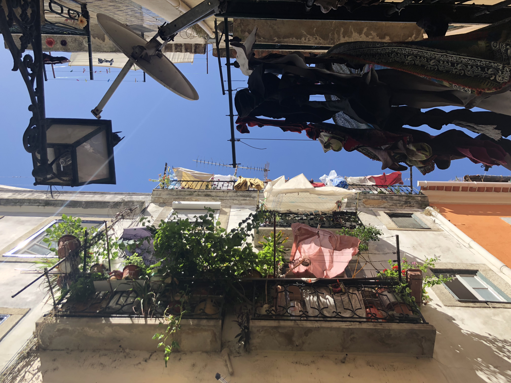
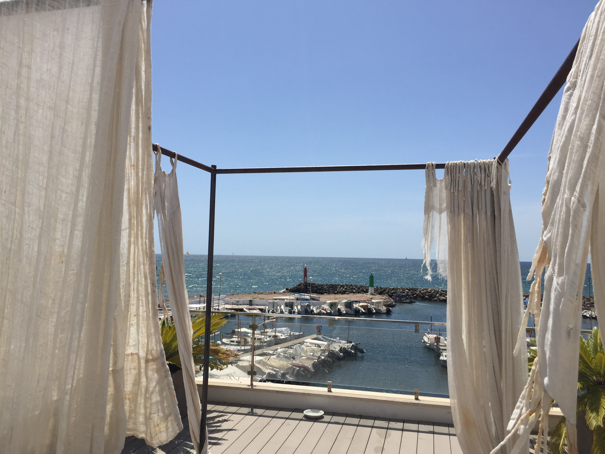
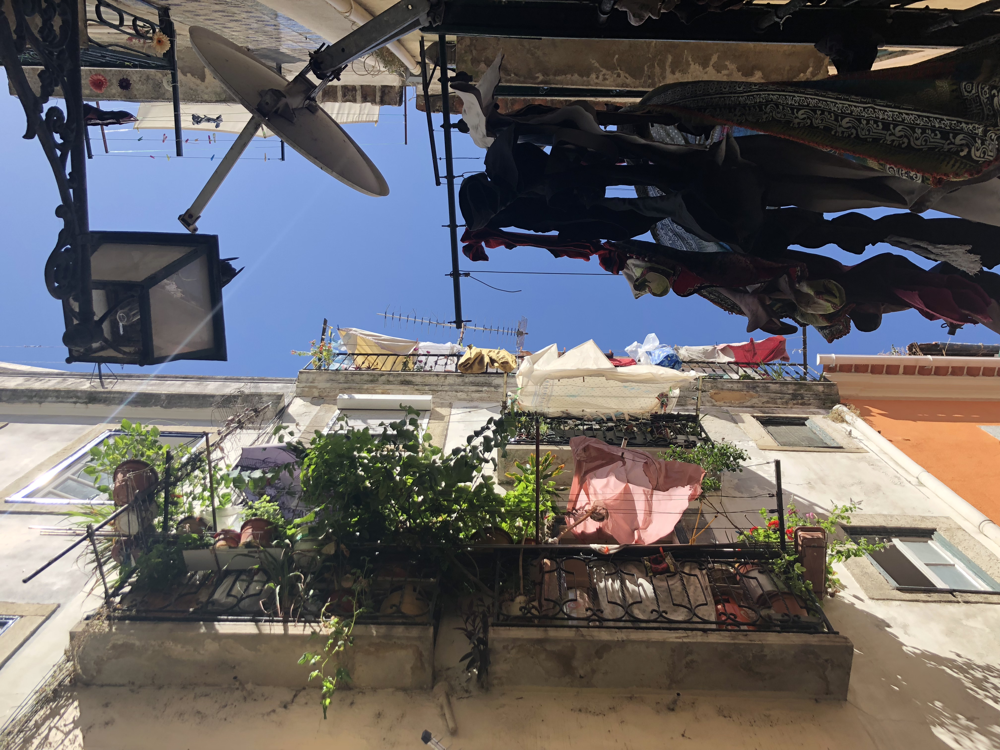
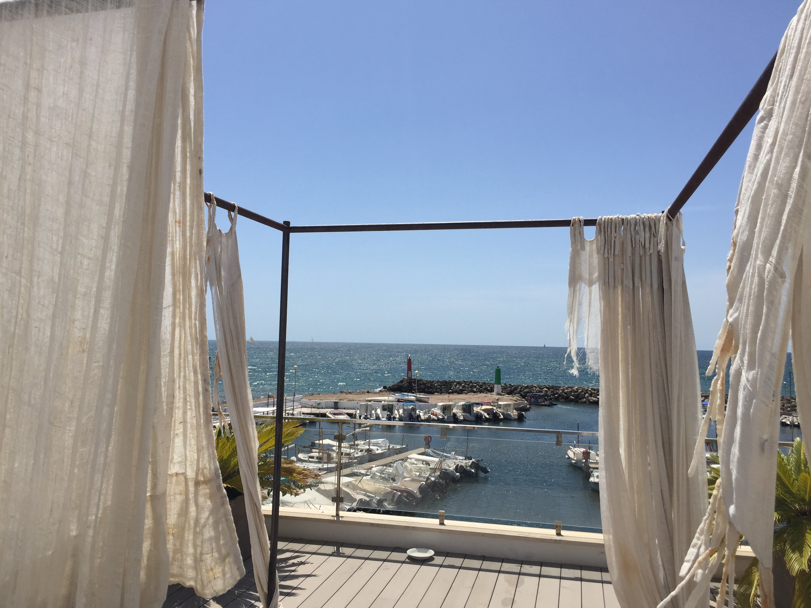


 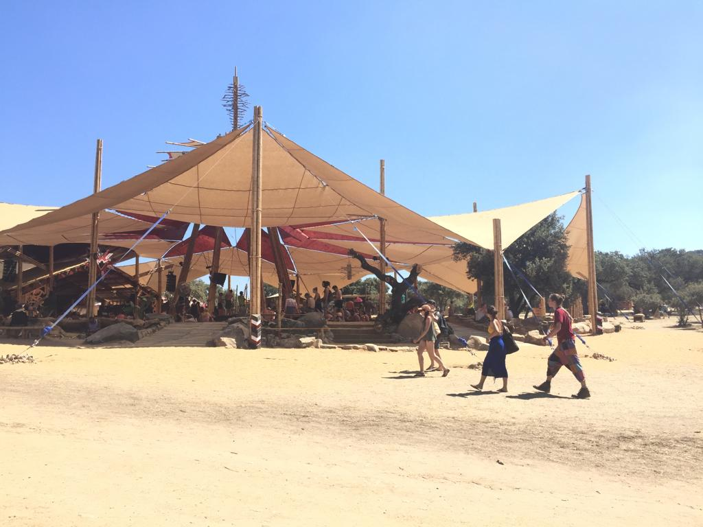
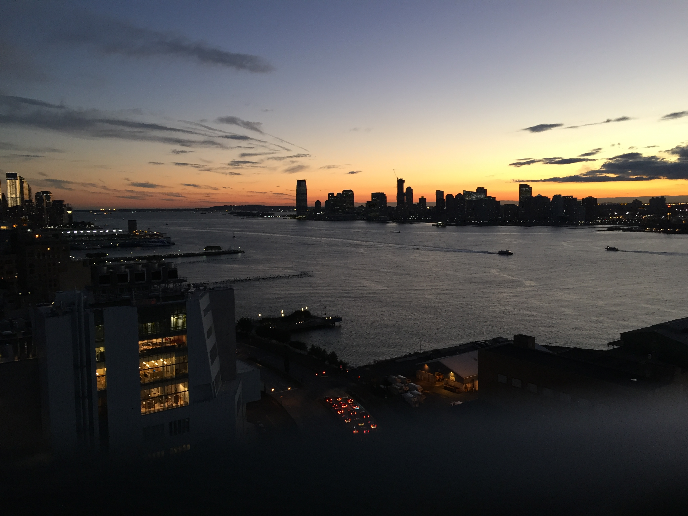
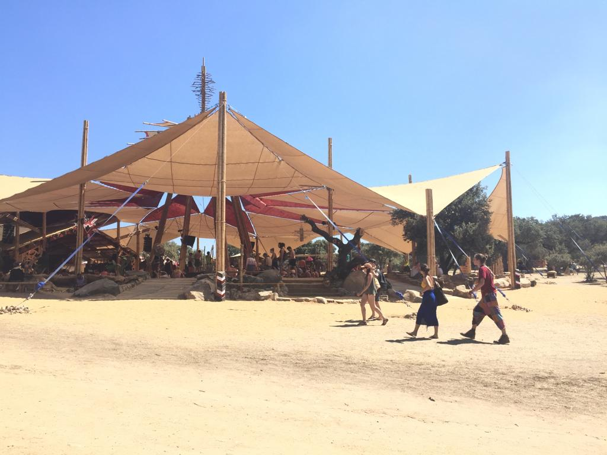
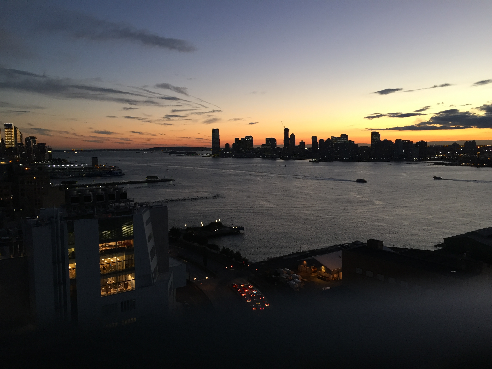


 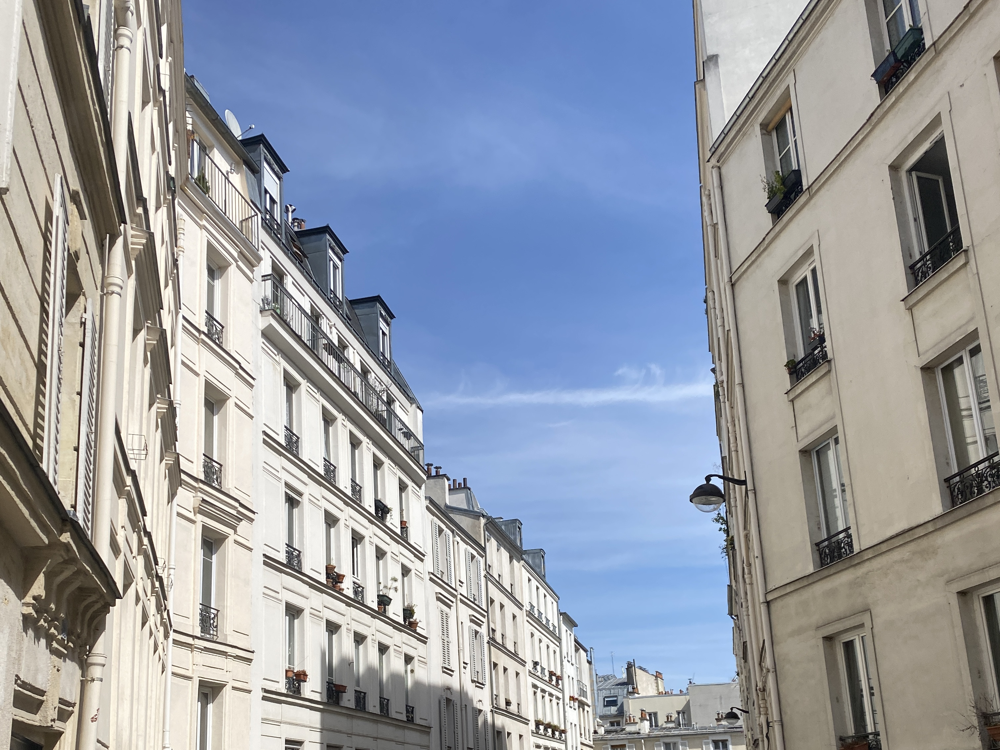
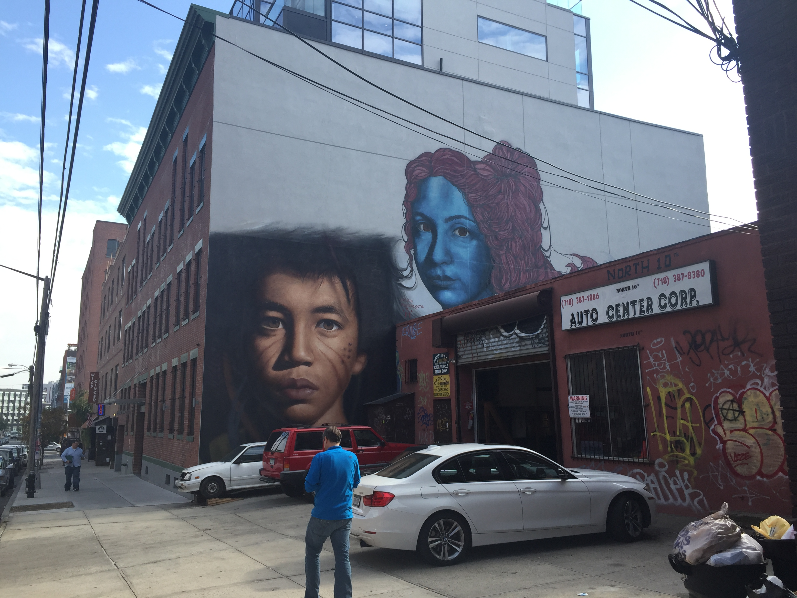
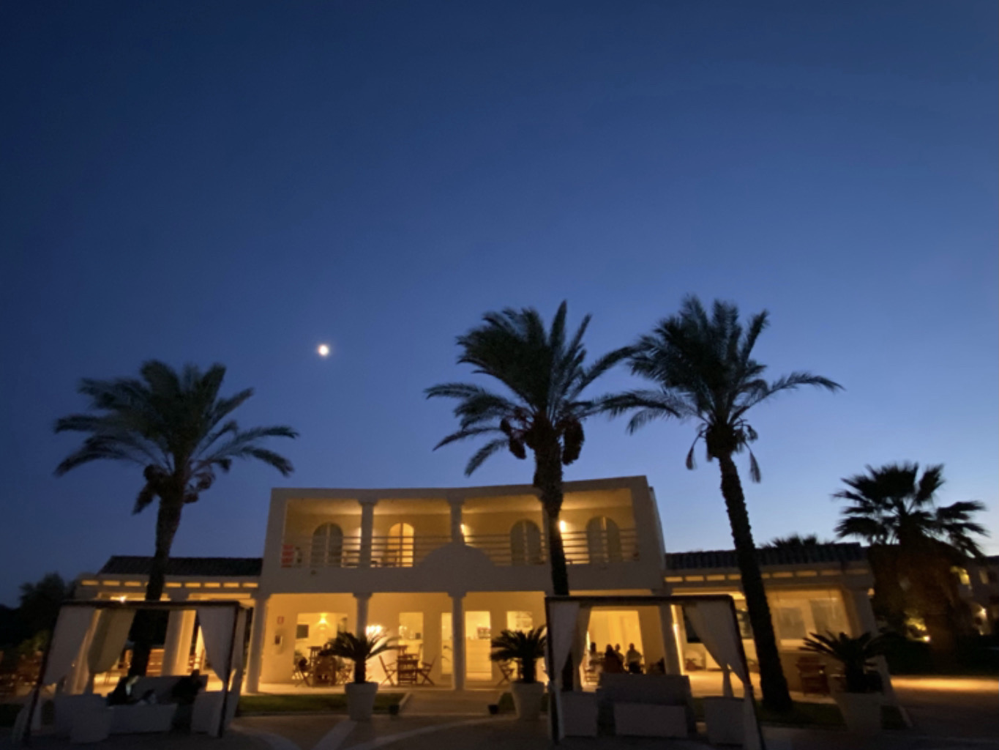
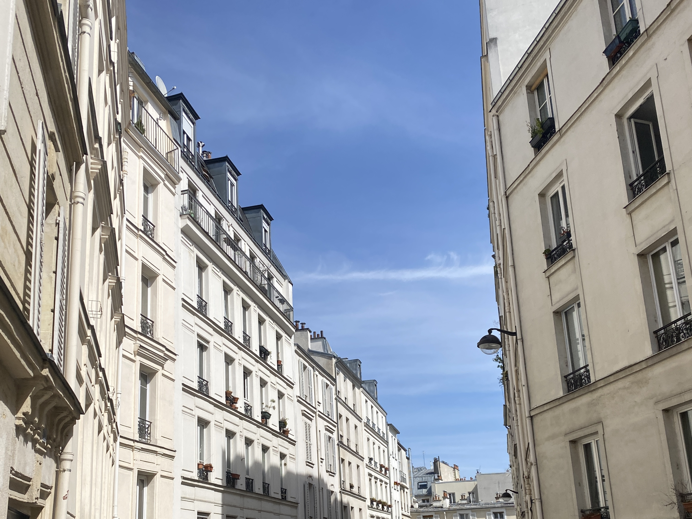
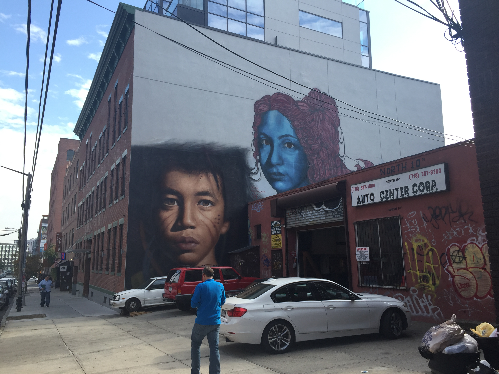
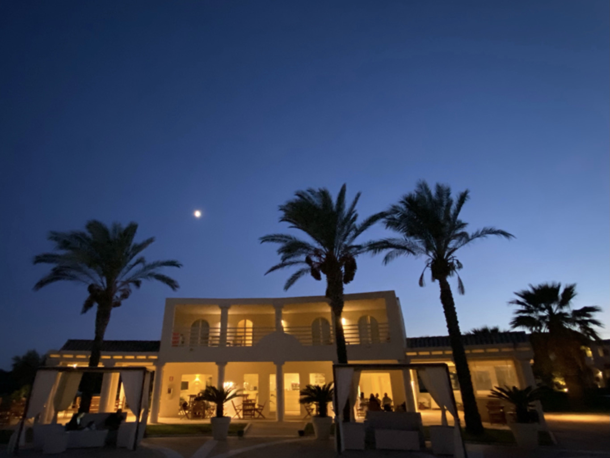